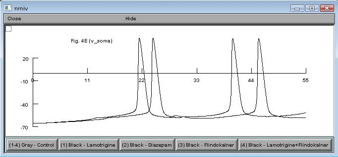

This is the readme for the NEURON model from the paper: Ferrante et al, Computational models of neuronal biophysics and the characterization of potential neuropharmacological targets. Curr Med Chem. 2008;15(24):2456-71. In this paper, the model shows how different types of neuroactive drugs and drugs interactions influence the signal generation, integration and propagation. Specifically Fig.4E.hoc produces a plot of the somatic voltage traces shown in Fig. 4E of the paper. Under linux/unix systems: to compile the mod files use the command nrnivmodl and run the simulation hoc file with the command nrngui fig.4E.hoc Under Windows systems: to compile the mod files use the "mknrndll" command. A double click on the simulation file Fig.4E.hoc will open the simulation window. Under MAC OS X: to compile the mod files drag and drop the extracted folder onto the mknrndll icon. Drag and drop the mosinit.hoc file onto the nrngui icon. Once NEURON started you can press the "(1-4) Gray - Control" button. Then when the simulation is done click on the graphs upper left pull down menu box and select "Keep lines". Finally, press the button labeled "(1) Black - Lamotrigine", and you should get a graph that combines the black and gray traces of Fig. 4E and looks something like:  Questions on how to use this model should be directed to mferran1@gmu.edu